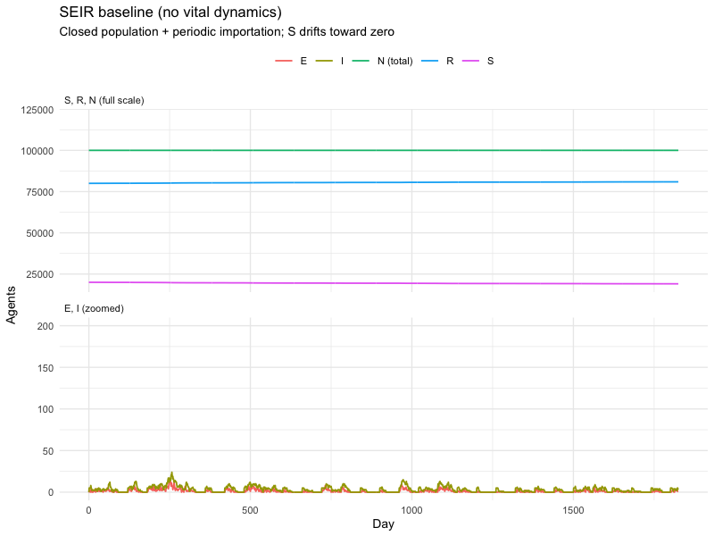
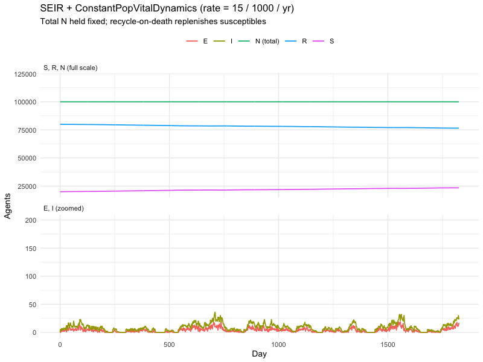
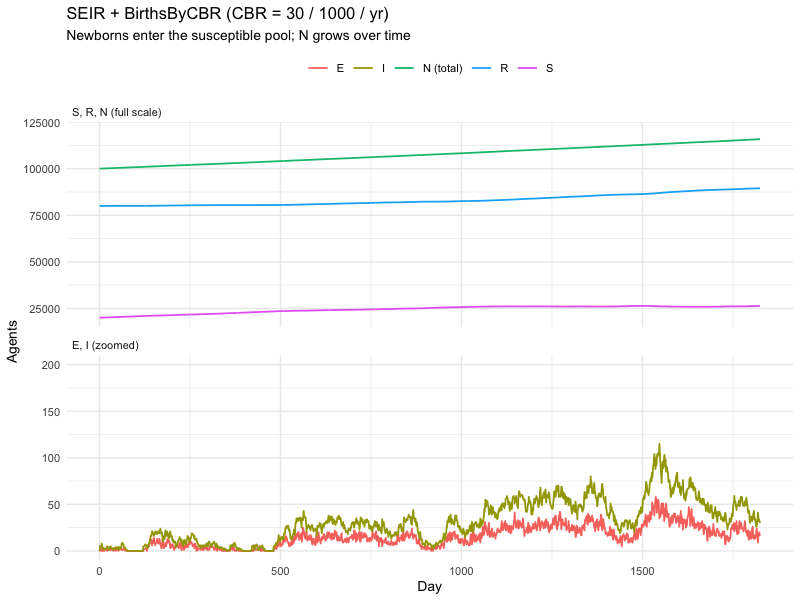
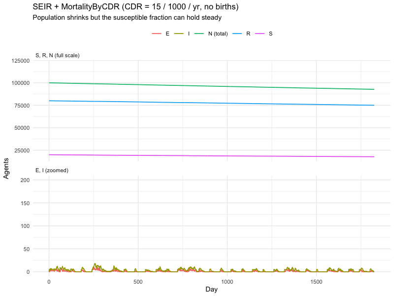
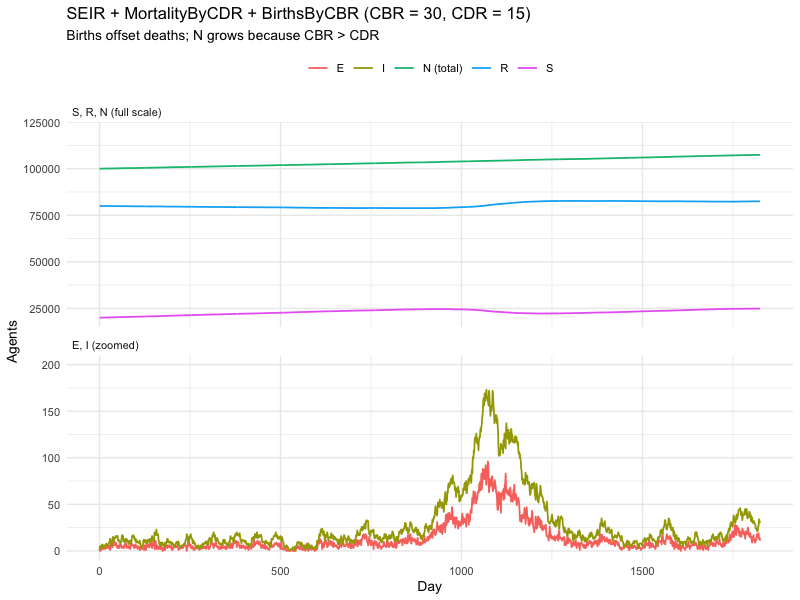
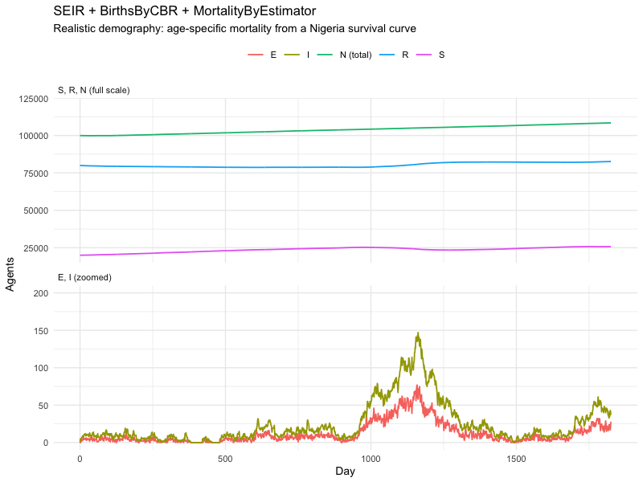
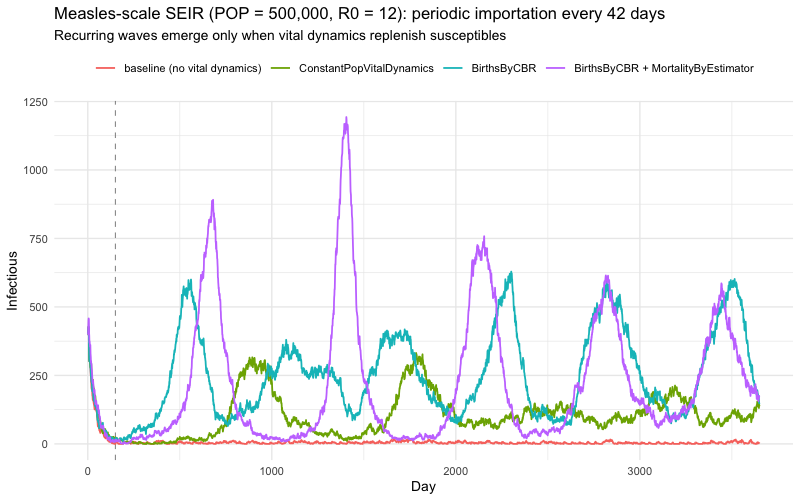

Customizing laser-generic models: adding vital dynamics
laser-generic tutorials 2026-06-25
- Setup
- Common SEIR base
- The reintroduction component
- Baseline — no vital dynamics
- Adding
ConstantPopVitalDynamics - Adding
BirthsByCBR - Adding
MortalityByCDR - Adding
MortalityByEstimator - Scaling up: measles-style biennial dynamics
- Four scenarios, one comparison
- Choosing between the components
- What’s next
This tutorial builds on 01-models.Rmd. We start with a baseline SEIR
model and progressively layer in the four vital-dynamics components from
laser.generic.vitaldynamics:
| Component | What it adds |
|---|---|
ConstantPopVitalDynamics |
Deaths that immediately recycle into newborn agents — population stays exactly constant. |
BirthsByCBR |
Per-tick Poisson births driven by a crude birth rate and an age pyramid. Population grows. |
MortalityByCDR |
Per-tick mortality driven by a crude death rate. Population shrinks unless paired with births. |
MortalityByEstimator |
Age-specific mortality sampled from a survival curve (Kaplan-Meier). Realistic demography. |
Requires R ≥ 4.1. See README.md for setup.
Setup
1 2 | |
1 | |
1 2 | |
A small utility that adds a total-population trajectory on top of
compartments_df():
1 2 3 4 5 6 7 8 9 10 11 12 13 14 15 16 17 18 19 20 21 22 23 24 25 26 27 28 29 30 31 32 33 34 35 36 37 38 39 40 41 42 43 44 45 46 47 | |
Common SEIR base
We’ll keep the disease parameters fixed across every example so the contribution of each demographic component is the only thing changing. Two design choices up front shape what every section below shows:
- Endemic-equilibrium initial conditions. Instead of starting with
the whole population susceptible — which produces one large outbreak
that consumes almost every susceptible and then leaves nothing for
vital dynamics to interact with — we seed the steady-state structure
of an endemic disease:
S = N / R0andR = N · (1 - 1 / R0), withE = I = 0. The disease enters the population only via reintroduction. - Periodic reintroduction throughout. A small custom component
imports 5 random new infections every 60 days. With no vital
dynamics, the susceptible pool drains permanently and each
importation lands on an increasingly immune population. With vital
dynamics, every section below tells a different story about how the
SandRpopulations evolve and how that drives the subsequent disease dynamics.
With those two choices, the differences between sections come from demography alone — not from how the simulation was seeded.
1 2 3 4 5 6 7 8 9 10 11 12 13 14 15 16 17 18 19 20 21 22 23 | |
A factory for the scenario + parameter set — every section calls this so the only thing that changes between examples is the components list.
1 2 3 4 5 6 7 8 9 10 11 12 13 14 15 16 17 18 19 20 21 22 23 24 25 26 27 28 29 30 31 32 33 34 35 36 37 38 39 40 | |
The Nigeria age pyramid and survival curve we’ll need for the births and age-specific-mortality examples:
1 2 3 4 5 6 7 8 9 10 11 12 13 14 15 | |
The reintroduction component
Every section below adds a small custom component that injects
IMP_COUNT random new infections every IMP_PERIOD ticks. Without it,
an SEIR sim that starts at endemic equilibrium would damp out almost
immediately (E and I are zero at t = 0) and the demographic comparisons
would all show flat lines. With it, the trajectory after the first few
weeks reflects the interplay between reintroduction and whatever the
vital dynamics are doing to the susceptible and recovered pools.
The class is defined in Python via reticulate::py_run_string() and
exposed back to R as PeriodicImportation. This is also the canonical
pattern for writing any custom component — it just needs a step(tick)
method.
1 2 3 4 5 6 7 8 9 10 11 12 13 14 15 16 17 18 19 20 21 22 23 24 25 26 27 28 29 30 31 32 33 34 35 36 37 38 39 40 41 42 43 44 45 46 47 48 49 50 51 52 53 54 | |
A small wrapper so the sections below can just call
make_importation(model):
1 2 3 4 5 6 7 8 9 10 11 12 13 | |
Baseline — no vital dynamics
Closed population, periodic reintroduction. Every importation event
shrinks the susceptible pool and grows the recovered pool, and nothing
refills S. Over five years that drift permanently moves the system
away from its starting equilibrium: S decays, R accumulates, and the
size of each importation-triggered flare-up shrinks accordingly. Total
N is flat by construction.
1 2 3 4 5 6 7 8 9 10 11 12 13 14 | |

Adding ConstantPopVitalDynamics
Recycles deceased agents into newborns at the specified rate (per 1000
per year), keeping total population exactly constant. Useful when you
care about birth-cohort flow but want to avoid sizing capacity for
indefinite growth. Because newborns enter as susceptible while the
deceased come predominantly from R (which holds most of the population
at equilibrium), this component replenishes S from R at the recycle
rate — enough to keep importations producing visible activity throughout
the five years.
1 2 3 4 5 6 7 8 9 10 11 12 13 14 15 16 17 | |

Adding BirthsByCBR
Adds Poisson-distributed newborns each tick driven by a crude birth
rate. With no offsetting mortality, the population grows. Every newborn
enters the susceptible compartment, so S is replenished at
CBR × N / 1000 / 365 per day. Together with periodic reintroduction
this keeps importation events firing through the full five years and the
susceptible pool trending up rather than down.
BirthsByCBR must come last among the vital-dynamics components so
the rest of the tick is computed against today’s population, not after
the newborns have joined. The importation component then runs after that
— it writes to tick + 1, so its order relative to the rest of the tick
doesn’t matter.
1 2 3 4 5 6 7 8 9 10 11 12 13 14 15 16 17 | |

Adding MortalityByCDR
Per-tick mortality risk applied uniformly across the population. With no
offsetting births, this drains R (the largest compartment) faster than
it drains S, so the susceptible fraction actually rises even
though the absolute population is shrinking. Periodic importation
therefore keeps producing flare-ups for longer than the baseline, even
though the total population is falling.
First, mortality alone (no births):
1 2 3 4 5 6 7 8 9 10 11 12 13 14 15 16 17 | |

Now with births balancing deaths. Both inflows and outflows on every
compartment; the net effect is roughly proportional to CBR − CDR
(positive here), and the susceptible inflow from BirthsByCBR keeps
importations producing flare-ups indefinitely.
1 2 3 4 5 6 7 8 9 10 11 12 13 14 15 16 17 18 19 20 21 | |

Adding MortalityByEstimator
Age-specific mortality sampled from a Kaplan-Meier survival curve.
Unlike MortalityByCDR (uniform per-tick risk), this draws each agent’s
date of death from the survival distribution conditional on their date
of birth — which means BirthsByCBR must be present with track = TRUE
so newborns have a recorded dob. The mortality bias toward older
(predominantly recovered) agents drains R faster than it drains S,
which combined with the steady birth inflow into S is the closest of
these setups to a real-world demographic baseline.
1 2 3 4 5 6 7 8 9 10 11 12 13 14 15 16 17 18 19 20 | |

Scaling up: measles-style biennial dynamics
The earlier sections all ran at POP = 100,000 and R0 = 5 so they fit
comfortably in the introductory budget for a tutorial. At those settings
the per-tick effects of each vital dynamic are visible but subtle. To
see the textbook biennial outbreak pattern that emerged for
pre-vaccine measles, we need three changes:
- Larger population (500,000 vs 100,000) — a typical Critical Community Size for measles-style dynamics is in the 250-500K range. Below that, stochastic die-out between outbreaks dominates and the recurring-wave signal vanishes into noise.
- Higher R0 (12 vs 5) — within the canonical measles range. Each wave consumes nearly all available susceptibles, and the trough-to-peak amplitude is large enough to read off the plot.
- Faster, more aggressive reintroduction — 5 cases every six weeks instead of every two months, and started a few months in to let the equilibrium settle before the dynamics start swinging.
We reuse PeriodicImportation from above (no need to redefine the
class) but build the model with the measles-scale parameters and run for
ten years so the recurring structure has room to develop.
Four scenarios, one comparison
We run four configurations under the same measles-scale setup and stack them on one axis so the differences between vital-dynamics choices read off at a glance.
1 2 3 4 5 6 7 8 9 10 11 12 13 14 15 16 17 18 19 20 21 22 23 24 25 26 27 28 29 30 31 32 33 34 35 36 37 38 39 40 41 42 43 44 45 46 47 48 49 50 51 52 53 54 55 56 57 58 59 60 61 62 63 64 65 66 67 68 69 70 71 72 73 74 75 76 77 78 79 80 81 82 83 84 85 86 87 88 | |

What the four lines say:
- baseline (no vital dynamics). Without new susceptibles entering the population, the initial endemic prevalence damps out and every subsequent importation lands on an immune population. The flat zero line is the absence of vital dynamics.
ConstantPopVitalDynamics. Recycle-on-death continuously feeds the susceptible compartment, so importations periodically reignite the disease. Waves are stochastic and unevenly spaced because the recycle rate (CDR = 15 / 1000 / yr) is lower than the births case below.BirthsByCBR. Births at CBR = 30 / 1000 / yr build the susceptible pool roughly twice as fast asConstantPopdoes. Waves arrive at a regular cadence and peak higher because more susceptibles accumulate between waves.BirthsByCBR + MortalityByEstimator. Same susceptible inflow, but the immune population now ages out via realistic age-specific mortality. Recovered adults die and are replaced by susceptible newborns at a balance that gives the cleanest biennial signal of the four — outbreaks at roughly two-year intervals once the system reaches its rhythm. This matches the canonical pre-vaccine measles pattern.
The dashed grey line marks M_START (day 150) so it’s clear which
features of the trajectory are driven by importation versus by the
original seeded prevalence.
Choosing between the components
A rough guide:
| If you need … | Use |
|---|---|
| The simplest closed-population approximation | nothing (baseline) |
| To keep total population pinned, with cohort turnover | ConstantPopVitalDynamics |
| Growth driven by a published CBR | BirthsByCBR |
| Uniform mortality, possibly paired with births | MortalityByCDR |
| Age-realistic mortality from a survival curve | BirthsByCBR(track = TRUE) + MortalityByEstimator |
For multi-decade runs with realistic age structure, the
BirthsByCBR + MortalityByEstimator pair is the closest to a fielded
demographic model.
What’s next
- Multi-node scenarios. Pass
M > 1andN > 1tomake_scenario()and a vector of populations to drive a grid. The vital-dynamics components apply per-node. - Time-varying rates. Each rate input above is a
ValuesMap. Build one withValuesMap()$from_array(np_array)(wherenp_arrayhas shape(nticks, n_nodes)) to make CBR/CDR vary across the simulation horizon. - Real survival data. Substitute another country’s survival curve by
replacing the
Nigeria-Survival-2020.csvload.